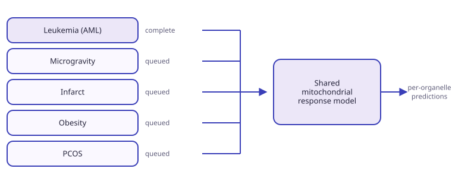

With leukemia complete, further disease comparisons are queued. The aim is a shared model of how mitochondrial programs shift under perturbation: similar in concept to a virtual cell, but scoped to the organelle.
Queue
- Microgravity, which pairs with the wet-lab experiment.
- Infarct.
- Obesity.
- PCOS.
- Further conditions as suitable datasets appear.

Objective
- Combine the disease comparisons with the donor and receiver map.
- Model mitochondrial perturbation directly rather than inferring it from whole-cell behaviour.
Requirement
- Enough disease datasets for the shared signal to separate from batch effects.
- That threshold has not been reached yet.